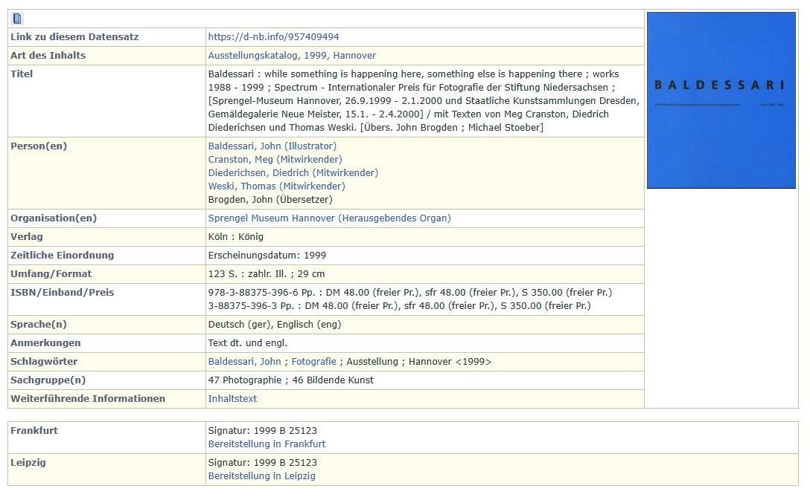
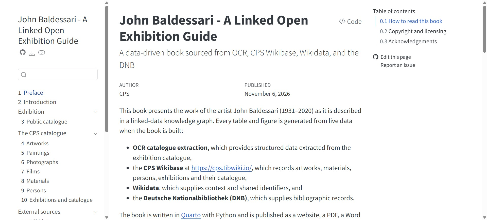
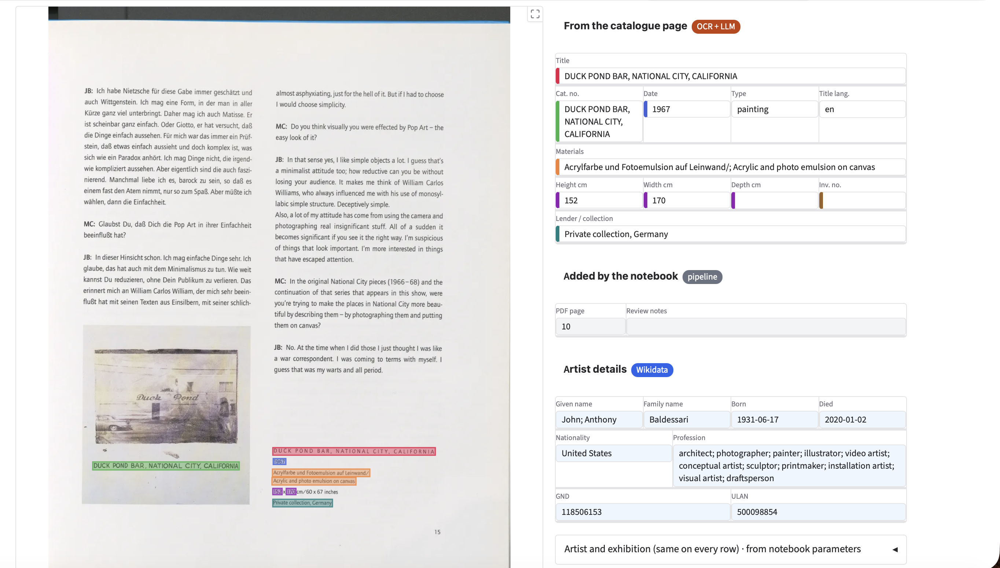
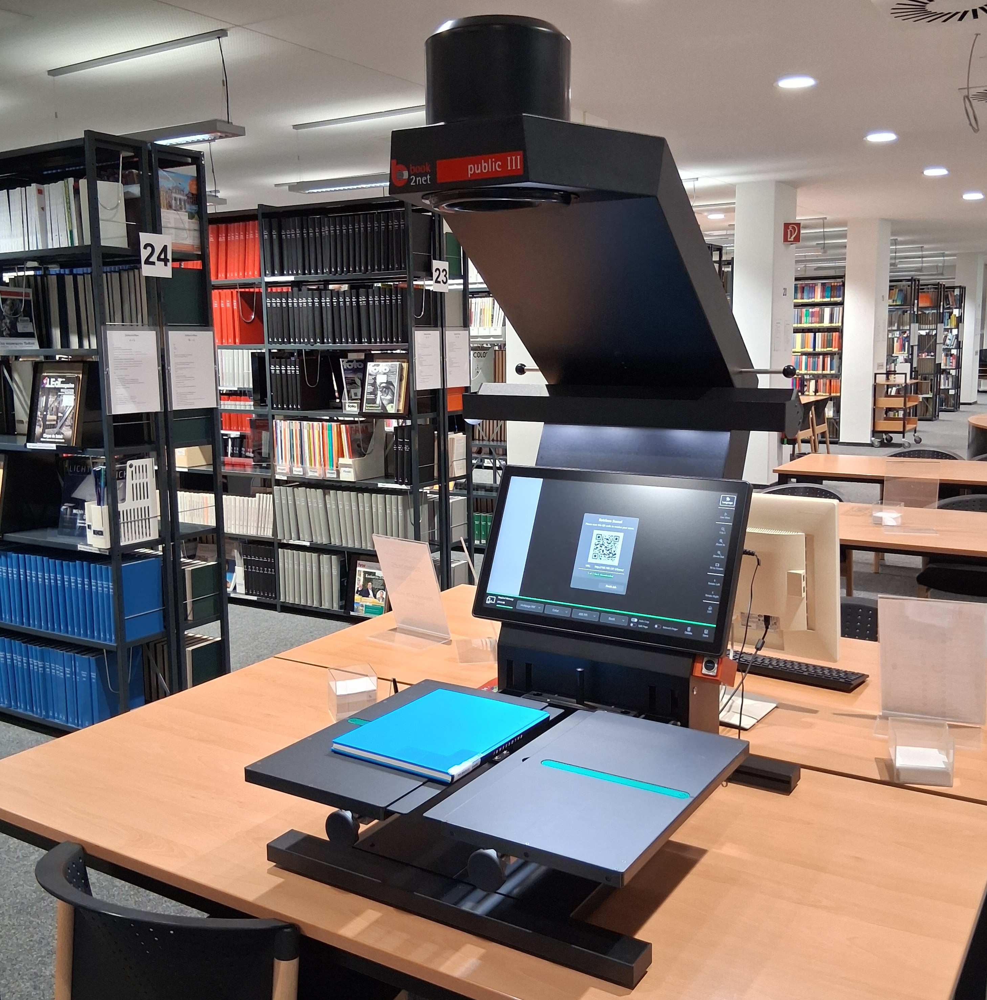

%%{init: {'flowchart': {'htmlLabels': false, 'padding': 140, 'nodeSpacing': 100, 'curve': 'linear'}, 'themeVariables': {'fontFamily': 'Futura, "Century Gothic", "Trebuchet MS", sans-serif'}}}%%
flowchart LR
A((" Work of Art ")):::red --> B((" Part of ")):::yellow --> C((" Exhibition  ")):::blue
classDef red fill:#D62718,stroke:#000,stroke-width:8px,color:#fff,font-size:30px,font-weight:bold
classDef yellow fill:#F2C500,stroke:#000,stroke-width:8px,color:#000,font-size:30px,font-weight:bold
classDef blue fill:#1D4E9E,stroke:#000,stroke-width:8px,color:#fff,font-size:30px,font-weight:bold
linkStyle default stroke:#000,stroke-width:8px
Linked Open Exhibitions
Dear curators — thanks for all the art?
Simon Worthington, Open Science Lab - TIB and Hochschule Hannover, ORCID iD: 0009‑0007‑1146‑6745; Chloë Farr, Open Science Lab - TIB and University of Victoria, ORCID iD: 0009‑0007‑1146‑6745
2026-11-10
A Homage to Winckelmann (1717-68)
.jpg "Johann Joachim Winckelmann")
A Public Record of Art in Exhibitions
Deposit Linked Open Data in Wikidata
Legend (CIDOC CRM): E22 Human-Made Object | P19i forms part of | E7 Activity
A Typical Public Exhibition Record

Link Open Exhibition Demo
John Baldessari: Exhibition Catalogue Sprengel Museum Hannover, 26.9.1999 - 2.1.2000

- Artworks and exhibition are connected
- Mapped to CIDOC/AAT/Iconclass
- Loaded on to Wikibase/Wikidata
- Make publications or use on websites
- Source can be:
- Database
- OCR
- Manual entry
OCR and AI LLM
Open-weight model does OCR, guided by schemas, extract all 73 artworks from scan. Claude built Gravio UI built for manual review.

- Scan the printed catalogue
- OCR extracts the text
- AI LLM structures the entries
- Check and correct manually
- Data piped into Wikibase (Wikidata)
- Only use Metadata and TDM permitted for research purposes
Dear Curators - Thanks for All the Art!
Book Scanner at Hochschule Hannover Library

Art school libraries are one of the few places that have the current public records of exhibitions as print exhibition catalogues. This resource should be OCR scanned and made public for research and archival purposes. With AI LLM workflows this is now possible.
Info and credits
Catalogue of works by the artists John Baldessari shown in an art exhibition at the Sprengel Museum Hannover 26.9.1999 - 2.1.2000. The purpose of the prototype is to demonstrate how to catalogue artworks in an exhibition as Linked Open Data on Wikidata. In this instance an OCR scan is transfered to Wikidata and then ouput as a computationally reproducible Quarto publication.
OCR workflow: Chloë Farr, ORCID iD: 0009-0007-1146-6745
Concept and execution: Simon Worthington, ORCID iD: 0000-0002-8579-9717
Thank you to the students of the Bachelor of Arts Information Management at Hochschule Hannover in the course BIM-126-02 Data Science (SoSe 2026)
Demo and Wikibase: nfdi4culture.github.io/Baldessari/ and cps.tibwiki.io.